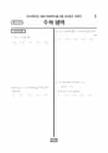

문제지

2024학년도 6월 모의평가 · 2023년 6월 시행
2024학년도 6모 수학 확률과통계 1등급컷은 원점수 88점(추정), 표준점수 최고점은 151점입니다.
원점수 1등급컷은 공식 발표값이 아니라 EBSi·입시기관 값입니다. 등급별 값은 등급컷 표, 출처 구분은 데이터 원칙에 있습니다.

시험지를 먼저 풀어 보세요. 등급컷·표준점수·난이도는 흐리게 가려 뒀어요.
| 등급 | 원점수 | 표준점수 | 백분위 | 누적 |
|---|---|---|---|---|
| 1 | 88 | 134 | 95 | 5.34% |
| 2 | 80 | 127 | 89 | 11.66% |
| 3 | 69 | 118 | 78 | 23.29% |
| 4 | 53 | 106 | 60 | 40.68% |
| 5 | 36 | 92 | 40 | 60.77% |
| 6 | 21 | 80 | 22 | 78.49% |
| 7 | 14 | 75 | 11 | 90.27% |
| 8 | 8 | 71 | 4 | 96.3% |
등급별 컷 · 입시기관 3곳 원점수 추정 종합(이투스·종로학원·대성마이맥) · 공통+선택 점수 조합에 따라 다를 수 있음 · 만점 100점
정답 변경 없음
이의신청 14문항
시험 전체 관련 보도 4건은 2024학년도 6월 모의평가 회차 페이지에 모아 두었어요.
수학 영역 전체 응시자 기준입니다. 한국교육과정평가원이 교육부 보도자료로 공개한 표준점수 도수분포로 계산했습니다.
EBSi 응답자 기준으로 가장 많이 틀린 문항은 22번(4점, 주관식)이고, 오답률은 97.1%입니다. 상위 15문항 중 2문항은 정답보다 한 오답을 고른 사람이 더 많았습니다(13번: 정답 ① 19.7%, ④ 30.5%). 오답률 50%를 넘은 문항은 12개입니다.
| 순위 | 문항 | 배점 | 오답률 | 정답 | 많이 고른 오답 |
|---|---|---|---|---|---|
| 1 | 22번 | 4점 | 97.1% | 380 | 주관식 |
| 2 | 21번 | 4점 | 90% | 110 | 주관식 |
| 3 | 20번 | 4점 | 87.9% | 39 | 주관식 |
| 4 | 30번 | 4점 | 85.7% | 51 | 주관식 |
| 5 | 29번 | 4점 | 84% | 25 | 주관식 |
| 6 | 13번 | 4점 | 80.3% | ① | ④ 30.5% |
| 7 | 15번 | 4점 | 80% | ② | ④ 26.6% |
| 8 | 12번 | 4점 | 63.9% | ⑤ | ④ 23.5% |
| 9 | 28번 | 4점 | 62% | ⑤ | ④ 19% |
| 10 | 19번 | 3점 | 60.1% | 8 | 주관식 |
| 11 | 9번 | 4점 | 60% | ① | ④ 22.7% |
| 12 | 14번 | 4점 | 56.7% | ③ | ④ 24.8% |
| 13 | 26번 | 3점 | 48.3% | ① | ④ 16.3% |
| 14 | 11번 | 4점 | 46.8% | ③ | ④ 16.5% |
| 15 | 10번 | 4점 | 44.7% | ② | ③ 14.9% |
EBSi 가채점 응답자 기준 · 전 문항 중 오답률 상위 15문항
출처: EBSi 역대 등급컷·오답률 공개 화면. 가채점에 참여한 EBSi 이용자 응답이라 전체 응시자 정답률과는 다를 수 있습니다.
발행 기관: 한국교육과정평가원(KICE). 파일 위치: 이 사이트가 보관한 사본. 저작권은 발행 기관에 있습니다. 원본과 다르거나 게시 중단이 필요하면 연락처로 알려 주세요. 등급컷 출처 구분은 데이터 원칙에서 설명합니다.
막대 색은 역대 대비 난이도 · 진한 막대가 이 시험 · 막대를 누르면 그 회차로 이동
공통과목 22번(4점)은 정수 조건이 붙은 함수에 대해, 주어진 등식을 만족시키는 세 실수가 열린구간에 존재할 조건을 따져 미분계수를 구하는 문항이었습니다. EBSi 가채점 응답자 기준 오답률이 97.1%로 이 회차의 모든 영역을 통틀어 가장 높았습니다.
21번(4점, 90.0%)은 로그함수와 다른 곡선이 만나는 점의 좌표에 대한 명제 ㄱ~ㄷ의 참·거짓에 따라 점수를 매겨 값을 구하는 단답형 문항, 20번(4점, 87.9%)은 이차함수로 정의된 함수가 주어진 부등식 조건을 만족시킬 때 함숫값을 구하는 문항이었습니다. 객관식인 13번(80.3%)과 15번(80.0%)도 오답률이 80%를 넘었습니다.
확률과 통계 30번(4점, 85.7%)은 숫자가 적힌 흰 공과 검은 공이 든 주머니에서 공을 꺼내 규칙에 따라 점수를 얻는 시행의 확률을 구하는 문항, 29번(4점, 84.0%)은 검은색 카드와 숫자가 적힌 흰색 카드를 조건에 맞게 일렬로 배열하는 경우의 수를 구하는 문항이었습니다.
입시기관 추정 1등급 원점수 컷이 다른 선택과목보다 높게 형성되어, 확률과 통계 응시자에게는 공통과목의 실수 하나가 등급에 크게 영향을 주는 시험이었습니다.
29번처럼 카드 사이에 몇 장 이상이 들어가야 하는 배열은 조건에 필요한 칸을 먼저 확보한 뒤 남는 카드를 분배하는 방식으로 바꾸면 실수가 줄어듭니다. 30번 같은 점수 획득 시행은 흰 공·검은 공이 나오는 경우를 나눠 점수표를 먼저 만들어 보세요.